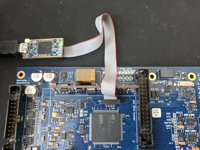
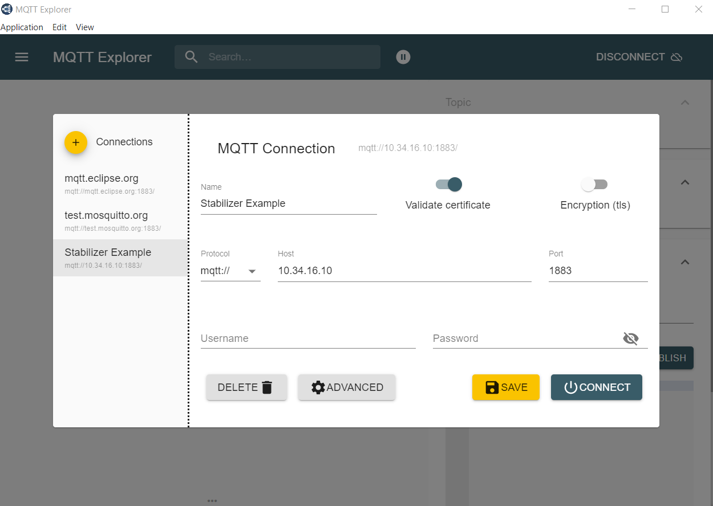

Overview
Stabilizer is a flexible tool designed for quantum physics experiments. Fundamentally, Stabilizer samples up two two analog input signals, performs digital signal processing internally, and then generates up to two output signals.
Stabilizer firmware supports run-time configuration of the internal signal processing algorithms, which allows for a wide variety of experimental uses, such as digital filter design or implementation of digital lockin schemes.
This documentation is intended to bring a user up to speed on using Stabilizer and the firmware provided by QUARTIQ and contributors.
Hardware
The Stabilizer hardware is managed via a separate repository. Some information about the hardware is gathered in the Stabilizer wiki. More detailed data, measurements, discussions, and tests have been posted in the Stabilizer issue tracker.

Stabilizer can be extended and coupled with a mezzanine board. One such mezzanine is the DDS upconversion/downconversion frontend Pounder. The Pounder hardware is managed via a separate repository, again with wiki and issue tracker.
Applications
This firmware offers a library of hardware and software functionality targeting the use of the Stabilizer hardware in various digital signal processing applications commonly occurring in Quantum Technology.
It provides abstractions over the fast analog inputs and outputs, time stamping, Pounder DDS interfaces and a collection of tailored and optimized digital signal processing algorithms (IIR, FIR, Lockin, PLL, reciprocal PLL, Unwrapper, Lowpass, Cosine-Sine, Atan2) in the idsp crate.
An application, which is the compiled firmware running on the device, can compose and configure these hardware and software components to implement different use cases.
Several applications are provided by default.
The following documentation links contain the application-specific settings and telemetry information.
| Application | Description |
|---|---|
dual-iir | Two channel biquad IIR filter |
lockin | Lockin amplifier support various various reference sources |
Library Documentation
The Stabilizer library docs contain documentation for common components used in all Stabilizer applications.
The Stabilizer library documentation is available here.
Table of Contents
Setup
The Stabilizer firmware consists of different applications tailored to different use cases. Only one application can run on the device at a given time. After receiving the Stabilizer hardware, you will need to choose, build, and flash one of the applications onto the device.
Power
Power Stabilizer through exactly one of the following mechanisms.
- Via the backside 12V barrel connector
- Via Power-over-Ethernet using a PoE capable switch (802.3af or preferrably 802.3at) and the RJ45 front panel port
- Via an EEM connection to Kasli
Note: Applying power through more than one mechanism may lead to damage. Ensure the two unused methods are not connected or explicitly disabled.
USB Configuration
The USB port can be used to bootstrap Stabilizer and configure all internal settings. This is useful either when first configuring the MQTT connection or when operating Stabilizer in standalone mode (i.e. without an ethernet connection or an MQTT broker).
Connect a USB cable and open up the serial port in a serial terminal of your choice. pyserial
provides a simple, easy-to-use terminal emulator:
python -m serial <port>
Once you have opened the port, you can use the provided menu to update any of Stabilizers runtime settings.
Note: Network settings configured via USB do not take immediate effect. Instead, they will apply after the device is rebooted.
Network and DHCP
Stabilizer supports 10Base-T or 100Base-T with Auto MDI-X.
Stabilizer uses DHCP to obtain its network configuration information. Ensure there is a properly
configured DHCP server running on the network segment that Stabilizer is connected to. If a DHCP
server is not available and a static IP is desired, Stabilizer can be configured with a static IP
via the USB interface. A configured ip of "0.0.0.0" will use DHCP.
Note: If Stabilizer is connected directly to an Ubuntu system (for example using a USB-Ethernet dongle) you can set the IPv4 settings of this Ethernet connection in the Ubuntu network settings to "Shared to other computers". This will start and configure a DHCP server for this connection.
MQTT Broker
Stabilizer requires an MQTT broker that supports MQTTv5. The MQTT broker is used to distribute and exchange elemetry data and to view/change application settings. The broker must be reachable by both the host-side applications used to interact with the application on Stabilizer and by the application running on Stabilizer. The broker must be reachable on port 1883 on that IP address - it may either be an IP address or a fully qualified domain name. Firewalls between Stabilizer and the broker may need to be configured to allow connections from Stabilizer to that port and IP address.
Mosquitto has been used as a MQTT broker during development, but any MQTTv5 broker without authentication or encryption will likely work.
Note: Mosquitto version 1 only supports MQTTv3.1. If using Mosquitto, ensure version 2.0.0 or later is used.
We recommend running Mosquitto through Docker to easily run it on
Windows, Linux, and OSX. After docker has been installed, run the following command from
the stabilizer repository to create a container named mosquitto that can be stopped
and started easily via docker:
# Bash
docker run -p 1883:1883 --name mosquitto -v `pwd`/mosquitto.conf:/mosquitto/config/mosquitto.conf -v /mosquitto/data -v /mosquitto/log eclipse-mosquitto:2
# Powershell
docker run -p 1883:1883 --name mosquitto -v ${pwd}/mosquitto.conf:/mosquitto/config/mosquitto.conf -v /mosquitto/data -v /mosquitto/log eclipse-mosquitto:2
Building
- Get and install rustup and use it to install a current stable Rust toolchain.
Stabilizer tracks stable Rust. The minimum supported Rust version (MSRV) is specified in the manifest (
Cargo.toml). - Install target support
rustup target add thumbv7em-none-eabihf - Install cargo-binutils
cargo install cargo-binutils rustup component add llvm-tools-preview - Clone or download the firmware
git clone https://github.com/quartiq/stabilizer cd stabilizer - Build firmware
# Bash cargo build --release # Powershell cargo build --release - Extract the application binary (substitute
dual-iirbelow with the desired application name)# Bash cargo objcopy --release --bin dual-iir -- -O binary dual-iir.bin # Powershell cargo objcopy --release --bin dual-iir -- -O binary dual-iir.bin
Flashing
Firmware can be loaded onto stabilizer using one of the three following methods.
Note: Most methods below require access to the circuit board. Pulling the device from a crate always requires power removal as there are sensitive leads and components on both sides of the board that may come into contact with adjacent front panels. Every access to the board also requires proper ESD precautions. Never hot-plug the device or the probe.
ST-Link virtual mass storage
If a ST-Link V2-1 or later is available this method can be used.
Power down the device, remove it from the crate, and connect the SWD/JTAG probe as shown below to the device and to your computer.

Power up the device and copy dual-iir.bin onto the virtual mass storage ST-Link drive
that has appeared on your computer.
Power down the device before removing the probe, inserting it into the crate
and applying power again.
DFU Upload
If an SWD/JTAG probe is not available, you can flash firmware using only a micro USB cable plugged in to the front of Stabilizer, and a DFU utility.
Note: If there is already newer firmware running on Stabilizer that supports the USB serial interface, there is no need to remove Stabilizer from the crate or disconnect any existing connectors/power supplies or to jumper the BOOT0 pin. Instead, open the serial port on Stabilizer and request it to enter DFU mode:
python -m serial <serial-port> > platform dfuAfter the device is in DFU mode, use the
dfu-utilcommand specified in the instructions below, and the DFU firmware update will be complete.
- Install the DFU USB tool
dfu-util - Remove power
- Then carefully remove the module from the crate to gain acccess to the board
- Short JC2/BOOT with the jumper
- Connect your computer to the Micro USB connector below/left of the RJ45 connector on the front panel
- Insert the module into the crate
- Then power it
- Perform the Device Firmware Upgrade (DFU)
dfu-util -a 0 -s 0x08000000:leave -R -D dual-iir.bin - To keep the device from entering the bootloader remove power, pull the board from the crate, remove the JC2/BOOT jumper, insert the module into the crate, and power it again
SWD/JTAG Firmware Development
To observe logging messages or to develop and debug applications a SWD/JTAG
probe is required. To use a compatible probe with probe-run connect it as
described above.
- Install
probe-rscargo install probe-rs --features cli - Build and run firmware on the device
# Bash cargo run --release --bin dual-iir # Powershell cargo run --release --bin dual-iir
When using debug (non --release) mode, decrease the sampling frequency significantly.
The added error checking code and missing optimizations may lead to the application
missing timer deadlines and panicing.
Set the MQTT broker
The MQTT broker address is configured via the USB port on Stabilizer's front. The address can be an IP address or a domain name. Once the broker address has been updated, power cycle stabilizer to have the new broker address take effect.
Verify MQTT connection
Once your MQTT broker and Stabilizer are both running, verify that the application connects to the broker.
A Stabilizer application on a device is reporting its status on the following topic
dt/sinara/dual-iir/+/alive
The + is a wildcard matching the unique MAC address of the device (e.g. aa-bb-cc-00-11-22).
Download MQTT-Explorer to observe which topics have been posted to the Broker.

Note: In MQTT explorer, use the same broker address that you set in the Stabilizer serial terminal.
In addition to the alive status, telemetry messages are published at regular intervals
when Stabilizer has connected to the broker. Once you observe incoming telemetry,
Stabilizer is operational.
Table of Contents
Miniconf Run-time Settings
Stabilizer supports run-time settings configuration using MQTT or the USB port.
Settings can be stored in the MQTT broker so that they are automatically applied whenever Stabilizer reboots and connects. This is referred to as "retained" settings. Broker implementations may optionally store these retained settings as well such that they will be reapplied between restarts of the MQTT broker.
Stabilizer also supports storing run time settings on the device. Any configurations saved to stabilizer via the USB port will be automatically reapplied when Stabilizer reboots. MQTT settings retained on the broker or settings published after the device has connected to the broker override the settings saved on Stabilizer.
Settings are specific to a device. Any settings configured for one Stabilizer will not be applied to another. Disambiguation of devices is done by using Stabilizer's MQTT identifier, which is defaulted to Stabilizer's MAC address.
Settings are specific to an application. If two identical settings exist for two different applications, each application maintains its own independent value.
Installation
Install the Miniconf configuration utilities using a virtual environment:
python -m venv --system-site-packages vpy
# Refer to https://docs.python.org/3/tutorial/venv.html for more information on activating the
# virtual environment. This command is different on different platforms.
./vpy/Scripts/activate
Next, install prerequisite packages
python -m pip install py
To use miniconf, execute it as follows:
python -m miniconf --help
Miniconf also exposes a programmatic Python API, so it's possible to write automation scripting of Stabilizer as well.
Usage
The Miniconf Python utility utilizes a unique "device prefix". The device prefix is always of the
form dt/sinara/<app>/<mac-address>, where <app> is the name of the application and
<mac-address> is the MAC address of the device, formatted with delimiting dashes, and lower case letters.
Settings have a path and a value being configured. The value parameter is JSON-encoded data
and the path value is a path-like string.
python -m miniconf --broker 10.34.16.1 dt/sinara/dual-iir/00-11-22-33-44-55 stream='"10.34.16.123:4000"'
Where 10.34.16.1 is the MQTT broker address that matches the one used by the application and 10.34.16.123 and 4000 are the desire stream target IP and port.
The prefix can be found for a specific device by looking at the topic on which telemetry that is being published. It can also be automatically discovered if there is only one device alive.
Refer to the application documentation for the exact settings and values exposed for each application.
The rules for constructing path values are documented in miniconf's
documentation
Refer to the documentation for Miniconf for a description of the possible error codes that Miniconf may return if the settings update was unsuccessful.
IIR Configuration
For the dual-iir application, the application supports different representations of biquad coefficients.
Telemetry
Stabilizer applications publish telemetry utilizes MQTT for managing run-time settings configurations as well as live telemetry reporting.
Telemetry is defined as low rate, general health information. It is not intended for high throughput or efficiency. Telemetry is generally used to determine that the device is functioning nominally.
Stabilizer applications publish telemetry over MQTT at a set rate. Telemetry data units are defined by the application. All telemetry is reported using standard JSON format.
Telemetry is intended for low-bandwidth monitoring. It is not intended to transfer large amounts of data and uses a minimal amount of bandwidth. Telemetry is published using "best effort" semantics - individual messages may be dropped or Stabilizer may fail to publish telemetry due to internal buffering requirements.
In its most basic form, telemetry publishes the latest ADC input voltages, DAC output voltages, and digital input states.
Refer to the respective application documentation for more information on telemetry.
Stream
Stabilizer supports streaming real-time data over UDP. The stream is intended to be a high-bandwidth mechanism to transfer large amounts of data from Stabilizer to a host computer for further analysis.
Streamed data is sent with "best effort" - it's possible that data may be lost either due to network congestion or by Stabilizer.
Refer to the the respective application documentation for more information.
Expand description
§Dual IIR
The Dual IIR application exposes two configurable channels. Stabilizer samples input at a fixed rate, digitally filters the data, and then generates filtered output signals on the respective channel outputs.
§Features
- Two indpenendent channels
- up to 800 kHz rate, timed sampling
- Run-time filter configuration
- Input/Output data streaming
- Down to 2 µs latency
- f32 IIR math
- Generic biquad (second order) IIR filter
- Anti-windup
- Derivative kick avoidance
§Settings
Refer to the DualIir structure for documentation of run-time configurable settings for this application.
§Telemetry
Refer to stabilizer::net::telemetry::Telemetry for information about telemetry reported by this application.
§Stream
This application streams raw ADC and DAC data over UDP. Refer to stabilizer::net::data_stream for more information.
Modules§
- The RTIC application module
Structs§
Enums§
Constants§
Expand description
§Lockin
The lockin application implements a lock-in amplifier using either an external or internally
generated reference.
§Features
- Up to 800 kHz sampling
- Up to 400 kHz modulation frequency
- Supports internal and external reference sources:
- Internal: Generate reference internally and output on one of the channel outputs
- External: Reciprocal PLL, reference input applied to DI0.
- Adjustable PLL and locking time constants
- Adjustable phase offset and harmonic index
- Run-time configurable output modes (in-phase, quadrature, magnitude, log2 power, phase, frequency)
- Input/output data streamng via UDP
§Settings
Refer to the Lockin structure for documentation of run-time configurable settings for this application.
§Telemetry
Refer to stabilizer::net::telemetry::Telemetry for information about telemetry reported by this application.
§Stream
This application streams raw ADC and DAC data over UDP. Refer to stabilizer::net::data_stream for more information.
Modules§
- The RTIC application module
Structs§
Enums§
- Conf 🔒